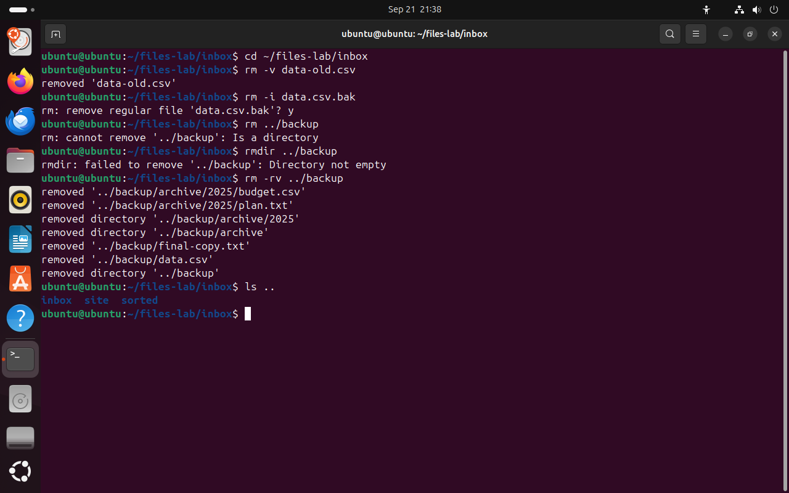
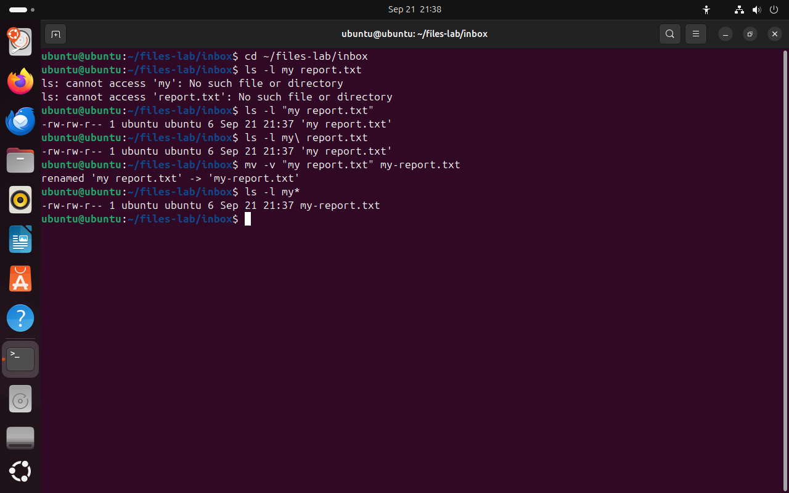

Часть 3 из 7
Удаление файлов и имена с пробелами
В этой части разберём команды rm и rmdir, порядок безопасного удаления и то, как оболочка делит на части имя с пробелом.
3.1 Удаление: rm и rmdir
Команда rm (remove — «удалить») удаляет имя файла из каталога. Если это было последнее имя файла, система освобождает место, которое занимали его данные. Корзины у rm нет. Корзина — функция графического файлового менеджера: при удалении он переносит файл в каталог ~/.local/share/Trash. Файл, удалённый в терминале, туда не попадает, и восстановить его обычными средствами нельзя.
Без ключей rm удаляет только файлы. Для каталога есть два способа. Команда rmdir удаляет только пустой каталог и отказывается, если внутри что-то есть. Команда rm -r удаляет каталог вместе со всем содержимым: сначала файлы, затем вложенные каталоги и в конце сам каталог. Вывод rm -rv показывает этот порядок по строкам.
Ключи -i и -v работают так же, как у cp: первый спрашивает про каждый файл, второй печатает каждое удаление. Ключ -f (force — «принудительно») действует наоборот: не задаёт вопросов и не сообщает об ошибке, если файла нет. Сочетание rm -rf часто встречается в инструкциях. Оно не задаёт вопросов и не выводит предупреждений, поэтому опечатка в пути приводит к удалению другого каталога.
cd ~/files-lab/inboxчто делает
Что делает команда. Переходит в каталог учебного набора inbox.
По частям:
cd- сменить текущий каталог
~/files-lab/inbox- куда перейти (путь от домашнего каталога)
rm -v data-old.csv# удалить и сообщитьчто делает
Что делает команда. Удаляет файл data-old.csv и печатает сообщение об удалении.
По частям:
rm- удалить файлы
-v- печатать каждое удаление
data-old.csv- что удалить (путь относительно текущего каталога)
rm -i data.csv.bak# спросить перед удалениемчто делает
Что делает команда. Спрашивает, удалить ли файл data.csv.bak, и удаляет его после ответа y.
По частям:
rm- удалить файлы
-i- спрашивать перед каждым удалением
data.csv.bak- что удалить (путь относительно текущего каталога)
y# ответ: удалитьrm ../backup# каталог без -rчто делает
Что делает команда. Пытается удалить каталог backup без ключа -r; rm отказывается и сообщает, что это каталог.
По частям:
rm- удалить файлы
../backup- что удалить (путь от каталога уровнем выше)
rmdir ../backup# каталог не пустчто делает
Что делает команда. Пытается удалить каталог backup; rmdir удаляет только пустые каталоги и сообщает, что каталог не пуст.
По частям:
rmdir- удалить пустой каталог
../backup- какой каталог удалить (путь от каталога уровнем выше)
rm -rv ../backup# каталог со всем содержимымчто делает
Что делает команда. Удаляет каталог backup со всеми файлами и вложенными каталогами и печатает каждое удаление.
По частям:
rm- удалить файлы
-r- удалять каталоги со всем содержимым
-v- печатать каждое удаление
../backup- что удалить (путь от каталога уровнем выше)
ls ..# backup больше нетчто делает
Что делает команда. Показывает содержимое каталога уровнем выше, то есть ~/files-lab.
По частям:
ls- вывести содержимое каталога
..- что показать (каталог уровнем выше)
- 1-v сообщает об удалённом файле
- 2-i спрашивает перед удалением
- 3без -r rm не удаляет каталог
- 4rmdir удаляет только пустой каталог
- 5rm -r удаляет сначала файлы, в конце сам каталог
- 6в ~/files-lab каталога backup больше нет
{kind=link}

Весь снимок ↗rm удаляет файлы, rmdir — только пустые каталоги, rm -r — каталог с содержимым.
Что показывает снимок. rm -v и rm -i удалили файлы; rm без -r и rmdir отказались удалять непустой каталог; rm -rv удалил его, начиная с файлов.
Где это пригодится. Отказ rmdir — полезная проверка: каталог удаляется, только если он действительно пуст. rm -r применяют к каталогам сборки и временным каталогам после проверки содержимого.
- 1Проверьте, в каком каталоге вы находитесь:
pwd. - 2Выведите то, что собираетесь удалить, той же записью:
ls путьдля файла или каталога. - 3Удаляйте с ключом
-v, а если файлов немного — с ключом-i. - 4Проверьте результат командой
ls: удалённых имён в выводе нет.
3.2 Имена с пробелами
Оболочка делит введённую строку на слова по пробелам: первое слово — имя команды, остальные — аргументы. Имя my report.txt без кавычек превращается в два аргумента: my и report.txt. Команда ls ищет два отдельных файла и не находит ни одного.
С ls такая ошибка безвредна. С rm та же запись опасна: rm my report.txt удалит файл report.txt, если он есть в каталоге, а файл my report.txt останется на месте.
Сохранить пробел внутри имени можно двумя способами. Кавычки "my report.txt" объединяют всё, что стоит между ними, в один аргумент. Обратная косая черта перед пробелом my\ report.txt отменяет особое значение этого пробела. Клавиша Tab дополняет имя файла и сама ставит нужные символы. В именах собственных файлов пробелы заменяют дефисом или подчёркиванием, тогда кавычки не нужны.
cd ~/files-lab/inboxчто делает
Что делает команда. Переходит в каталог учебного набора inbox.
По частям:
cd- сменить текущий каталог
~/files-lab/inbox- куда перейти (путь от домашнего каталога)
ls -l my report.txt# два аргумента вместо одногочто делает
Что делает команда. Без кавычек оболочка передаёт ls два аргумента, my и report.txt, и ls ищет два отдельных файла.
По частям:
ls- вывести содержимое каталога
-l- подробный список: права, владелец, размер, дата
my- первый аргумент: оболочка отрезала часть имени по пробелу
report.txt- второй аргумент: вторая часть имени
ls -l "my report.txt"# имя в кавычкахчто делает
Что делает команда. Выводит строку о файле my report.txt: кавычки объединяют имя с пробелом в один аргумент.
По частям:
ls- вывести содержимое каталога
-l- подробный список: права, владелец, размер, дата
"my report.txt"- один аргумент: кавычки объединяют имя с пробелом
ls -l my\ report.txt# пробел после обратной косой чертычто делает
Что делает команда. Выводит строку о файле my report.txt: обратная косая черта отменяет особое значение пробела.
По частям:
ls- вывести содержимое каталога
-l- подробный список: права, владелец, размер, дата
my\ report.txt- один аргумент: \ перед пробелом сохраняет пробел в имени
mv -v "my report.txt" my-report.txt# имя без пробелачто делает
Что делает команда. Переименовывает файл my report.txt в my-report.txt — имя без пробела.
По частям:
mv- перенести или переименовать
-v- печатать каждый перенос
"my report.txt"- что переименовать: имя с пробелом в кавычках
my-report.txt- куда или под каким именем (путь относительно текущего каталога)
ls -l my*что делает
Что делает команда. Выводит строки о файлах, имена которых начинаются с my.
По частям:
ls- вывести содержимое каталога
-l- подробный список: права, владелец, размер, дата
my*- что показать (маска: * — любые символы; оболочка заменит её именами файлов)
- 1без кавычек ls ищет два файла: my и report.txt
- 2кавычки и обратная косая черта сохраняют пробел в имени
- 3после переименования кавычки не нужны
{kind=link}

Весь снимок ↗Без кавычек оболочка делит имя с пробелом на два аргумента.
Что показывает снимок. Без кавычек ls получил два аргумента и сообщил о двух ошибках; с кавычками и с \ найден один файл.
Где это пригодится. Файлы с пробелами приходят из Windows и из загрузок браузера. В скриптах имена всегда берут в кавычки: "$file", иначе команда обработает не тот файл.
Итоги части 3
rmудаляет файлы без корзины;rmdirудаляет только пустой каталог;rm -r— каталог с содержимым.- Перед удалением содержимое выводят командой
lsс тем же путём. - Ключ
-iспрашивает перед каждым удалением,-fотключает вопросы и сообщения об ошибках. - Имя с пробелом берут в кавычки или ставят перед пробелом
\.
В отчётСнимок с сообщением rmdir и снимок с именем my report.txt.